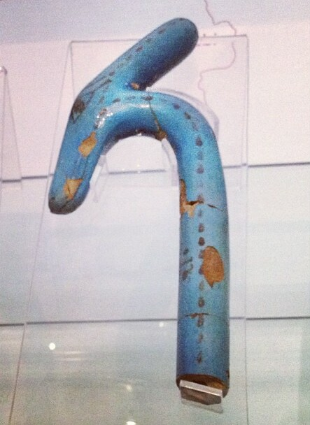

Уас
«Посох власти» · доминирование над хаосом · власть, которую дарят

Что такое уас
Уас (егип. уас) — длинный посох с раздвоенным низом и головой зверя наверху — главный атрибут власти в руках богов и фараона. Значение знака: власть, доминирование, контроль над хаосом. Держать уас в руке — значит держать саму силу.
Происхождение и форма
На навершии уаса — голова животного: чаще всего сокол или шакал, есть варианты с бубилом, бараном и с зверем Сета. Низ посоха раздвоен, словно хвост, — знак живой, движущейся силы. Настоящие уасы были длиннее метра и делались из металла, дерева или камня.
«Дарование уаса»
На рельефах есть сцена «дарования уаса»: бог — или ка царя — вручает посох фараону. Это ритуал передачи власти: царь не захватывает её, а получает от богов. Пара уас + анх — «Власть и Жизнь» — формула божественного правления: именно эти два знака боги держат в руках.
Уасы в гробницах
Уас-скипетры клали в гробницы фараонов и знати — знак власти умершего в загробном мире. В гробнице Тутанхамона (KV62) нашёлся позолоченный уас. В иероглифической записи скипетр уас — знак слова «год»: власть, как солнце, возвращается с каждым новым кругом.